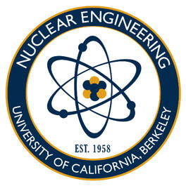
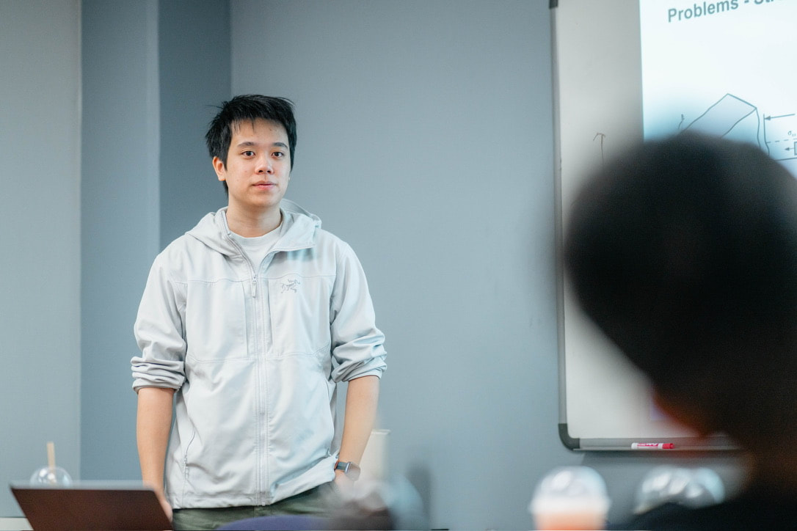

01
Radiation damage
We study how neutron and ion irradiation create defects, hardening, swelling, and embrittlement in structural alloys used in harsh reactor environments.
- Ion-beam irradiation
- Defect evolution
- Reactor safety

The Nuclear Materials Group at the University of California, Berkeley studies how structural materials degrade under irradiation, thermal stress, corrosion, and mechanical loading — with the goal of enabling more reliable nuclear fission and fusion technologies.
Current focus areas
About the group
The group is led by Peter Hosemann, a faculty member in the UC Berkeley Department of Nuclear Engineering. The work integrates mechanistic materials science, microstructural characterization, and performance testing to evaluate how candidate materials behave in hostile reactor environments.
Research spans irradiation embrittlement, liquid metal corrosion, high-entropy and refractory alloys, micro/nano-mechanics, and additive manufacturing for future fission and fusion systems.

We study how neutron and ion irradiation create defects, hardening, swelling, and embrittlement in structural alloys used in harsh reactor environments.
We investigate compatibility with lead-bismuth eutectic and other heavy liquid metals, including oxygen effects, corrosion kinetics, and embrittlement mechanisms.
By testing micro- and nano-scale specimens, we connect local deformation behavior to the larger performance limits of irradiated and non-irradiated materials.
We evaluate steels, titanium alloys, refractory metals, silicon carbide, and advanced high-entropy systems for demanding applications in nuclear and fusion energy.
The group studies additive manufacturing, functionally graded materials, and joining strategies for complex multi-material components exposed to severe environments.
The group creates data resources and analysis pipelines to interpret large datasets across historical irradiation and materials performance studies.
Approach
The group links materials processing, microstructure, and mechanical response to predict how components will perform in real service environments. This is accomplished through a combination of irradiation, microscopy, mechanical testing, and advanced alloy design.
Ion-beam irradiation and controlled exposure protocols compress material degradation into experimentally tractable timescales.
SEM, TEM, microscopy, and targeted analytical methods reveal defect structures and damage evolution on relevant length scales.
Microcompression, nanoindentation, fracture testing, and tensile work tie local behavior to bulk material performance.
Candidate alloys and coatings are developed and screened for long-term resilience in extreme operating conditions.
Group lead
Professor and Ernest S. Kuh Chair in Engineering
Vice Chair, Equity & Inclusion
Peter Hosemann received his Dipl.-Ing. (M.S.) and Dr. mont. (Ph.D.) degrees in Material Science from Montanuniversität Leoben, Austria. He began his research career at Los Alamos National Laboratory in 2005 and continued there as a postdoctoral researcher from 2008 to 2010. He has held research appointments at international laboratories, including the Paul Scherrer Institute in Switzerland. His work focuses on radiation-induced degradation mechanisms in structural materials used in nuclear fission, fusion, and spallation environments, with direct implications for engineering design and reactor safety.
WIP
Researches additive manufacturing of materials for extreme environments, including steels, titanium alloys, and tungsten.
Works on advanced high-entropy alloys for plasma-facing components in next-generation fusion reactors.
WIP

Studies fracture mechanics and microstructure-property relationships in metallic structural materials.
WIP
Focuses on micromechanical properties of nuclear materials and materials science fundamentals.
Studies micromechanical properties of nuclear reactor materials, with an emphasis on silicon carbide.
Researches metallic glasses, nanomechanical properties, and helium-ion irradiation response.
Works on mechanical testing of oxidized grain boundaries in structural materials for PWR environments.
Studies development and characterization of additively manufactured stainless steel lattices for shock absorption.

WIP

WIP
Explores reactor hydraulics, nuclear materials, physics, and engineering systems for nuclear energy technologies.
Studies materials for fusion energy, including micromechanical testing and characterization of tungsten alloys.
Worked on nuclear fuels, structural materials, laser annealing, irradiation-corrosion interactions, and fusion materials. Now pursuing a PhD at UCSD while working at General Atomics.
Interested in materials for extreme aerospace and nuclear environments, especially refractory high-entropy alloys.
International Materials Reviews, 2021
Materials & Design, 2016
Materials & Design, 2016
Journal of Nuclear Materials, 2012
Journal of Nuclear Materials, 2010
Scripta Materialia, 2018
Journal of Nuclear Materials, 2022